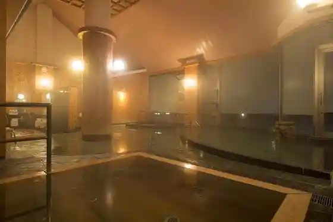
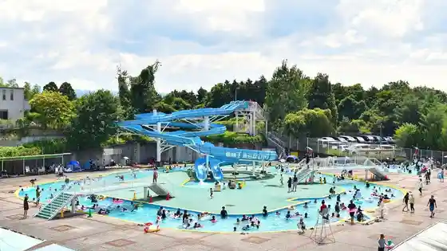
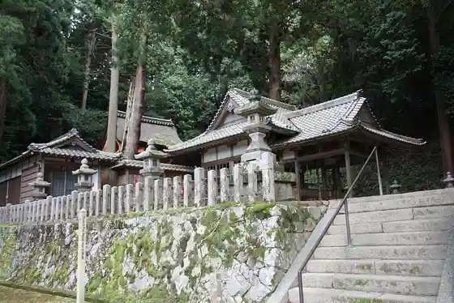
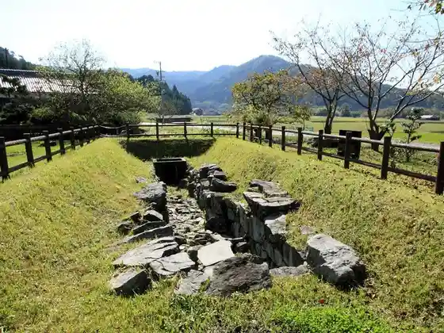

Iga no Kokudai Yamadaonsen Sarubi no
Iga, Mie · Official / source link

Hiru Hotel Sanpia Iga Puru
Iga, Mie · 0595-24-7000 · Official / source link

Inoda Shrine
Iga, Mie · 0595-22-9678 · Official / source link

Shiro Yuki Etsu Iseki
Iga, Mie · 0595-36-0055 · Official / source link
Tsujido Burial Mound
Iga, Mie · Official / source link

Kyu Oda Shogakko Honkan
Iga, Mie · 0595-21-9957 · Official / source link
Oka Hachiman Shrine
Iga, Mie · 0595-20-1828 · Official / source link
Kawakami Dam
Iga, Mie · 0595-52-3690 · Official / source link
Dai Village Shrine
Iga, Mie · 0595-52-1050 · Official / source link
Tane Nama Hotaru no Furu Sato Park
Iga, Mie · 0595-55-2004 · Official / source link
Menado Aoyama Resort
Iga, Mie · 0595-54-1326 · Official / source link
Menado Aoyama Resort Kosume Workshop
Iga, Mie · 0595-54-1326 · Official / source link
Menado Aoyama Resort Kurafuto Workshop
Iga, Mie · 0595-54-1326 · Official / source link
Menado Aoyama Resort Esuteteikku
Iga, Mie · 0595-54-1326 · Official / source link
Menado Aoyama Resort Okunai Onsui Puru
Iga, Mie · 0595-54-1326 · Official / source link
Menado Aoyama Resort Habu Garden
Iga, Mie · 0595-54-1326 · Official / source link
Menado Aoyama Resort Patagorufu
Iga, Mie · 0595-54-1326 · Official / source link
Menado Aoyama Resort Tenisukoto
Iga, Mie · 0595-54-1326 · Official / source link
Nishizawa no no Hanashobu Gunraku
Iga, Mie · 0595-22-9678 · Official / source link
Kyu Ueno City Chosha SAKAKURA BASE
Iga, Mie · Official / source link
Iga Ryu Ninja Taiken Shisetsu (Bansen Shu Umi)
Iga, Mie · 0595-51-7307 · Official / source link
Iga Kanko Infomeshon Center
Iga, Mie · 0595-51-9743 · Official / source link
Aoyama Highlands
Iga, Mie · 0595-22-9670 · Official / source link
Iga Ueno Shiro
Iga, Mie · 0595-21-3148 · Official / source link
Ueno Park
Iga, Mie · 0595-26-7788 · Official / source link
Iga Ryu Ninja Museum
Iga, Mie · 0595-23-0311 · Official / source link
Haisei Dono
Iga, Mie · 0595-41-0290 · Official / source link
Basho Okina Memorial Museum
Iga, Mie · 0595-22-9621 · Official / source link
Basho Okina Seika
Iga, Mie · 0595-24-2711 · Official / source link
Minomushi Iori
Iga, Mie · 0595-23-8921 · Official / source link
Basho Okina Kokyo Tsuka
Iga, Mie · 0595-22-9678 · Official / source link
Danjiri Hall
Iga, Mie · 0595-24-4400 · Official / source link
Iga Dento Densho Kan Iga Kumihimo Kumi Takumi Village
Iga, Mie · 0595-23-8038 · Official / source link
Historic Site Kyu Tadahiro Do
Iga, Mie · 0595-24-6090 · Official / source link
Buke Yashiki Irimajiri Ie House
Iga, Mie · 0595-26-0313 · Official / source link
Buke Yashiki Akai Ie House
Iga, Mie · 0595-51-7578 · Official / source link
Sugawara Shrine (Ueno Ten Shrine)
Iga, Mie · 0595-21-2940 · Official / source link
Iga Tera Town Tori
Iga, Mie · 0595-26-7788 · Official / source link
Furusato Basho no Mori Park
Iga, Mie · 0595-41-0290 · Official / source link
Basho Kuhi
Iga, Mie · 0595-21-2219 · Official / source link
Mieken Ueno Forest Park
Iga, Mie · 0595-22-2150 · Official / source link
Iwakura Kyo Park
Iga, Mie · 0595-24-0146 · Official / source link
Shoroku Saka no Chikurin
Iga, Mie · 0595-26-7788 · Official / source link
Ueno Sports Park Kyogijo
Iga, Mie · 0595-23-5191 · Official / source link
Naka no Se Magai Hotoke
Iga, Mie · 0595-22-9678 · Official / source link
Kagi Ya no Tsuji Park
Iga, Mie · 0595-41-0290 · Official / source link
Hyaku Chi Torideato
Iga, Mie · 0595-22-9670 · Official / source link
Iwane no Magai Hotoke
Iga, Mie · 0595-22-9678 · Official / source link
Kan Kuni Shrine
Iga, Mie · 0595-23-3061 · Official / source link
Ite Shrine
Iga, Mie · Official / source link
Takakura Shrine
Iga, Mie · 0595-21-5864 · Official / source link
Ka Go Tera no Shibunashigaya
Iga, Mie · Official / source link
Shoin Tera
Iga, Mie · 0595-21-3559 · Official / source link
Jofuku Tera
Iga, Mie · 0595-38-1016 · Official / source link
Sairen Tera
Iga, Mie · Official / source link
Ryosen Ryosen Sancho Iseki
Iga, Mie · Official / source link
Ryosen Tera
Iga, Mie · Official / source link
Shirafuji Taki
Iga, Mie · 0595-22-9670 · Official / source link
Basho Park (Fukuchi Castle Ruins)
Iga, Mie · 0595-26-7788 · Official / source link
Roadside Station (Iga)
Iga, Mie · 0595-45-3513 · Official / source link
Iga Doraibuin
Iga, Mie · 0595-45-6810 · Official / source link
Yokomitsu Park
Iga, Mie · 0595-22-9731 · Official / source link
Miyako Mie Shrine
Iga, Mie · Official / source link
Hioki Shrine
Iga, Mie · Official / source link
Kasuga Shrine
Iga, Mie · 0595-45-4398 · Official / source link
Tokunaga Tera
Iga, Mie · Official / source link
Manju Tera (Manju Tera)
Iga, Mie · Official / source link
Mibu no Castle Ruins
Iga, Mie · 0595-22-9670 · Official / source link
Kashino Castle Ruins
Iga, Mie · 0595-26-7788 · Official / source link
Kan Bodai Tera (Shogatsu Do)
Iga, Mie · 0595-59-3080 · Official / source link
Shrine
Iga, Mie · 0595-59-2065 · Official / source link
Mikuni Etsu Lookout
Iga, Mie · Official / source link
Yoemon Saka
Iga, Mie · Official / source link
Roadside Station (Ayama)
Iga, Mie · 0595-43-9955 · Official / source link
Yo no Park
Iga, Mie · 0595-45-6421 · Official / source link
Iga Yaki Kamamoto Hase Sono
Iga, Mie · 0595-44-1511 · Official / source link
Yo Otto Ta Shrine
Iga, Mie · Official / source link
Mei Tsuka Burial Mound
Iga, Mie · Official / source link
Makoto Doroike
Iga, Mie · Official / source link
Okuyama Atago Shrine
Iga, Mie · Official / source link
Amagagaku (Iga Fuji)
Iga, Mie · 0595-22-9670 · Official / source link
Hiroshi Yo no Oka
Iga, Mie · Official / source link
Aoyama Hamonii Foresuto
Iga, Mie · 0595-55-2255 · Official / source link
Kusa Yomogi Jiseki Yoshida Kaneyoshi Yukari no Chi (Kaneyoshi Tsuka)
Iga, Mie · Official / source link
Shimagahara Onsen Yabutcha
Iga, Mie · 0595-59-3939 · Official / source link
Iga Village Mokumoku Tezu Kuri Farm
Iga, Mie · 0595-43-0909 · Official / source link
Experience Gakushu Iga Yaki Dento Sangyo Hall
Iga, Mie · 0595-44-1701 · Official / source link
Hiru Hotel Sanpia Iga Tenisukoto
Iga, Mie · 0595-24-7000 · Official / source link
Meihan Adobencha Park
Iga, Mie · 0595-45-3509 · Official / source link
Shichitembatto
Iga, Mie · 080-6743-2037 · Official / source link
Zui Heri Kantorii Club Kyanion Ueno Kosu
Iga, Mie · 0595-21-8100 · Official / source link
Shindai Butsuji
Iga, Mie · 0595-48-0211 · Official / source link
no Village Ryori no Mise Mokumoku
Iga, Mie · 0595-43-0909 · Official / source link
Mokumoku no Tai Farm (Nogaku Sha)
Iga, Mie · 0595-43-0909 · Official / source link
Kan Bodai Tera Shogatsu Do
Iga, Mie · 0595-59-2018 · Official / source link
Homba De Honmono ! Ninja Shugyo Ya Goemomburo Taiken !
Iga, Mie · 0595-51-0513 · Official / source link
Gyararii Yamahon
Iga, Mie · 0595-44-1911 · Official / source link